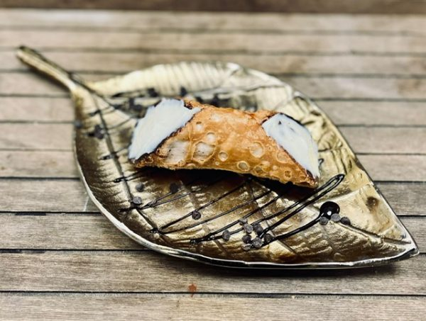
Cannolo Siciliana
Hét symbool van de Siciliaanse keuken: gefrituurd deeg (met witte wijn), van binnen bestreken met chocolade en gevuld met ricotta, chocoladestukjes en poedersuiker. Door onszelf vers gemaakt.
Groenestraat 69, Rheden · sinds 2015
Huisgemaakt schepijs, verse lunch, koffie van illy en echte Siciliaanse dolci. Een tussenstop tussen de Posbank en de Rhederlaag.
Di t/m zo open vanaf 12:00
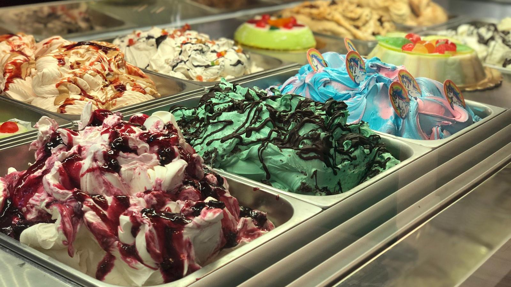
“IJsclusief, de ijssalon die staat voor kwaliteit in Rheden en omstreken. Waar je net iets meer krijgt dan je zou verwachten.”
Onze basis voor melkijs en sorbetijs maken we volledig zelf, volgens authentieke Italiaanse traditie. Voor sorbet- en vruchtenijs gebruiken we uitsluitend natuurlijke, verse vruchten. 100% kwaliteit, 100% Italiaans.
Romig Italiaans ijs op basis van koemelk. Bevat lactose.
Zonder melk, gemaakt van fruit, vruchtensap, vruchtenpuree en suikerstroop. Lactosevrij, glutenvrij en volledig vegan, boordevol echte fruitsmaak.
Deze smaken wisselen regelmatig. Op is op, dus wees er snel bij! Een greep uit de wisselsmaken:
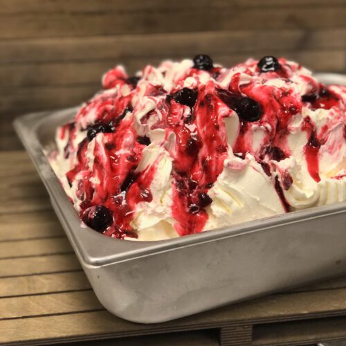
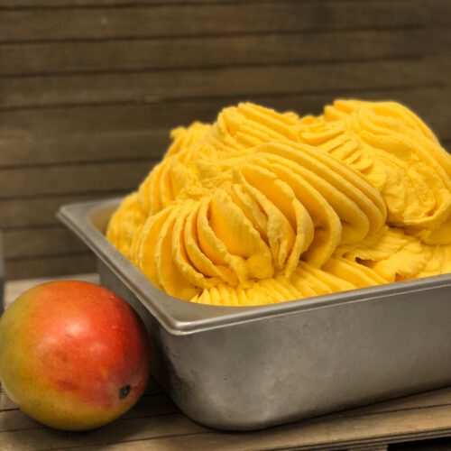
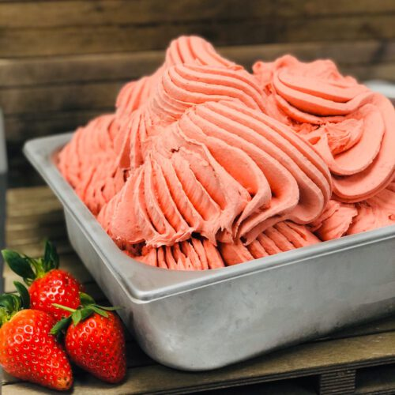
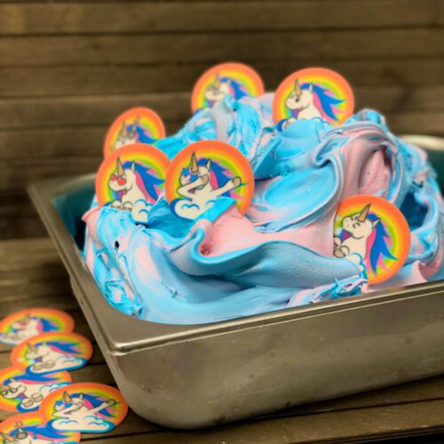
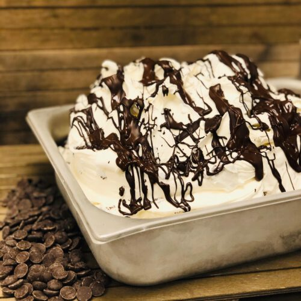
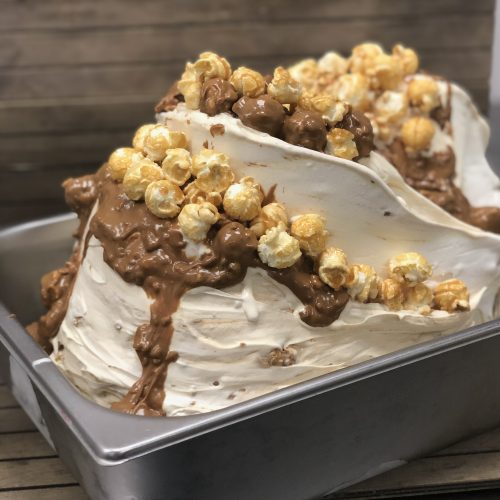
We hebben een overzicht gemaakt van al onze ijssmaken en de allergenen die erin kunnen voorkomen, met de grootst mogelijke zorg opgesteld op basis van onze ingrediënten. Tijdens het scheppen kan kruisbesmetting optreden; dat kunnen we nooit voor 100% uitsluiten, maar we nemen alle voorzorgsmaatregelen. We hebben ook glutenvrije en lactosevrije hoorntjes (op basis van soja). Heb je een allergie? Laat het ons gerust weten, dan helpen en adviseren we je graag.
Allergenenoverzicht per smaakLunchen in Italiaanse sferen: elke dag vers bereid en rijkelijk belegd met echte Italiaanse producten, zoals romige mozzarella, Parmaham uit Parma, vers gesneden tomaten en pesto. Prijzen in euro's.
Onze warme wafels hebben een bereidingstijd van ongeveer 10 minuten. Warme wafels kun je ook to go meenemen.
Voor extra beleg of dressing rekenen we een toeslag. Dieetwensen of allergieën? Laat het gerust weten, we passen je lunch graag aan. Buon appetito!
Onze pizza's beginnen bij authentieke, handgemaakte pizzabodems uit Bari, Zuid-Italië. Daar met zorg gemaakt, langzaam gerezen en gevormd voor een luchtige binnenkant en een krokante rand. Wij beleggen elke pizza vers met zorgvuldig geselecteerde ingrediënten. Kwaliteit boven snelheid.
Thuis nog even in de oven: 5 tot 8 minuten op 220-250 graden.
Ingrediënten en allergenen per pizzaWe schenken koffie van illy: een melange van negen soorten Arabica-bonen. Geurig, zacht en rond, met een chocolade-achtige espresso en een nasmaak van karamel. De teler krijgt een eerlijke prijs, met oog voor duurzaamheid. Alle koffievarianten zijn ook to go, voor wie op doorreis is.
Een uitgebreid assortiment losse thee van hoge kwaliteit, samengesteld door de meesterblenders van Dammann. Beleef het pure theedrinken.
Liever decafé of een andere soort melk? Dat kan, vraag naar de mogelijkheden.
Als het gaat om desserts weten Italianen als geen ander wat écht lekker is. Bij ons vind je ook Siciliaanse cannoli, smeuïge tartufo en torrone (nougat).

Hét symbool van de Siciliaanse keuken: gefrituurd deeg (met witte wijn), van binnen bestreken met chocolade en gevuld met ricotta, chocoladestukjes en poedersuiker. Door onszelf vers gemaakt.
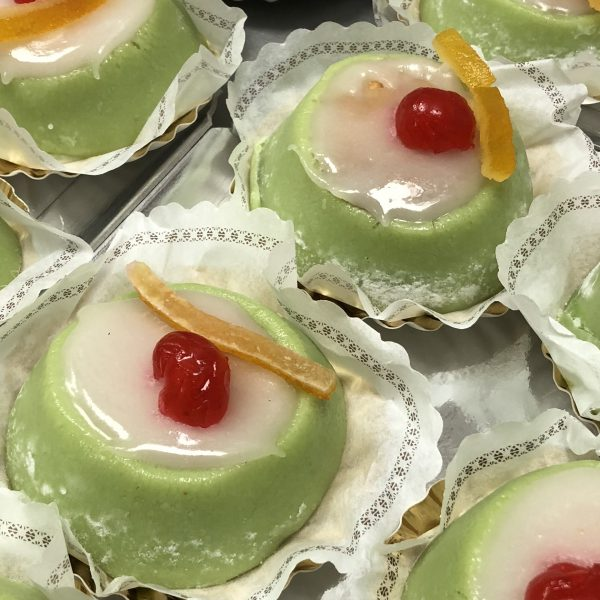
Zoet Siciliaans gebakje van gezoete ricotta, marsepein, gesuikerde vruchten en een cakebodem. Rechtstreeks geïmporteerd uit Palermo of door onszelf vers bereid.
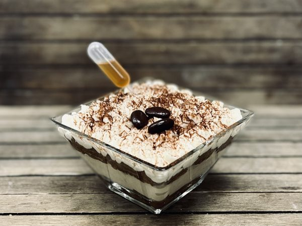
Huisgemaakt: lange vingers gedrenkt in espresso, mascarpone, geheime ingrediënten en cacao. In de zomermaanden afgewisseld met een frisse tiramisu al limoncello.
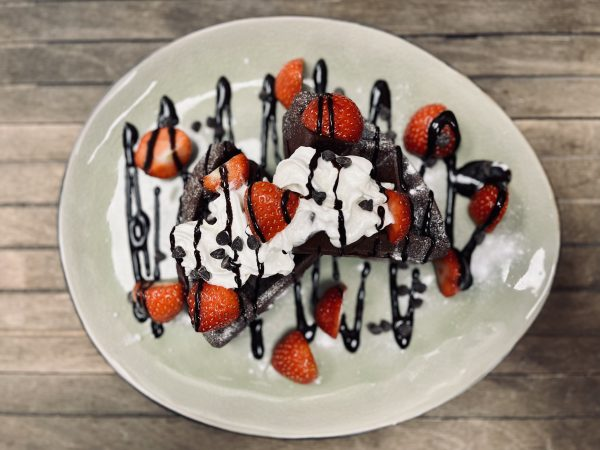
Vers, met poedersuiker, slagroom en een topping. Of met kersen, Nutella of een bol gelato. Ook to go.
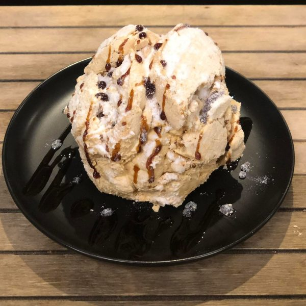
Heerlijk met verse slagroom, en een goede kop koffie of thee erbij.
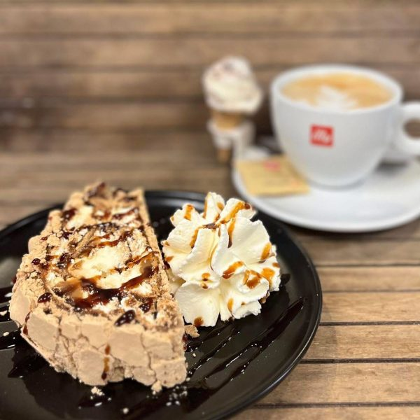
Luchtig schuim met een heerlijke crème, een toef slagroom en karamel- of lemoncurdsaus.
Liever ander gebak? We hebben een divers assortiment (Italiaanse) taarten. Kijk of vraag gerust wat er nu in de vitrine staat.
Voor een verjaardag, jubileum of ander feest maken we met plezier een ijstaart helemaal naar jouw wens. In de salon bespreken we samen de mogelijkheden. Bestellen kan in de salon of via info@ijsclusief.nl.
Standaard rond, custom made feest-, verjaardag- of tiramisutaart (Tiramisu al siberienne). Allemaal op een zachte joconde-biscuitbodem.
| 4 á 6 personen | € 19,00 |
|---|---|
| 6 á 8 personen | € 28,00 |
| 10 á 12 personen | € 42,00 |
| 14 á 16 personen | € 52,00 |
Bewaren op -22 °C. Haal de taart een half uur voor gebruik uit de vriezer.
In diverse smaken, gedecoreerd met chocolade en een spiegel. Vraag gerust naar de mogelijkheden.
Iets te vieren of jarig? Smaak en decoratie bepaal je zelf. Mini cones (met ijs naar keuze) op je taart kan ook: € 0,75 per stuk, het aantal hangt af van de taartgrootte.
Lagen joconde-biscuit, gevuld met mokka en mascarpone, ingepakt in gebrand eiwitschuim. Met Amaretto of Amaretto-siroop, eventueel gedecoreerd.
In diverse smaken, op joconde-biscuit, gedecoreerd met chocolade en slagroomtoefjes. Voor ca. 10 á 12 personen.
Speciaal voor mensen met een allergie. Voor ca. 6 personen, in een handige kunststof taartdoos met deksel: makkelijk te vervoeren en veilig in de vriezer. Smaken en decoratie bepaal je zelf.
IJs mee naar huis of als verrassing naar je visite? In onze ISO-bakken blijft je ijs maximaal 1 uur ijskoud buiten de vriezer (afhankelijk van de buitentemperatuur).
Een zorgvuldig gekozen assortiment rechtstreeks uit de mooiste regio's van Italië. Van ambachtelijke smaken tot unieke cadeaus. Breng een stukje la dolce vita naar je keuken, woonkamer of cadeaupakket.
Verwenbonnen van € 5 en € 10 bestel je eenvoudig online in onze webshop.
IJs maken is voor mij meer dan een ambacht. Het is een familieverhaal.
Het begint in de heuvels boven Palermo, in Monreale, waar mijn vader geboren is. Als kind bracht ik er mijn zomers door, met uitzicht op de citrusvlakte Conca d'oro, terwijl de geur van jasmijn en citrus door de lucht zweefde. Na het eten haalden we nog snel een gelato bij het kleine ijssalonnetje op de hoek. Die smaken, puur, vol en gemaakt met liefde, zijn me altijd bijgebleven.
Mijn ijs is geworteld in de Siciliaanse keuken: pistachenoten uit Bronte, net als vroeger bij mijn nonna. Rijpe citroenen die doen denken aan de tuinen van Monreale. Echte vanille, volle melk en fruit dat nog naar zon smaakt. Zonder kunstmatige toevoegingen.
Alles wat we nu weten, hebben we geleerd door te experimenteren, te proeven en opnieuw te proberen, net zolang tot het aan onze verwachtingen voldeed. Met onze kwaliteitseisen zijn we niet de goedkoopste, maar dat is ook niet ons doel. Ons doel is de beste zijn, en dat proef je.
Ci vediamo a presto.
Groenestraat 69
6991 GD Rheden
In het centrum van Rheden, tussen de bosrijke Posbank en het watergebied de Rhederlaag.
| Maandag | Gesloten |
|---|---|
| Dinsdag | 12:00 – 18:00 |
| Woensdag | 12:00 – 18:00 |
| Donderdag | 12:00 – 18:00 |
| Vrijdag | 12:00 – 20:00 |
| Zaterdag | 12:00 – 20:00 |
| Zondag | 12:00 – 20:00 |
Ben jij enthousiast, klantgericht en dol op ijs? Bij ons doe je van alles: ijs scheppen, koffie zetten, lunch maken en serveren, met veel contact met gasten in een hecht team. Werktijden die passen bij jouw situatie, als bijbaan of meer uren in het seizoen. Stuur je (korte) cv of een introductie en je motivatie naar info@ijsclusief.nl.